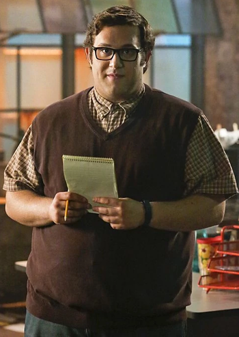
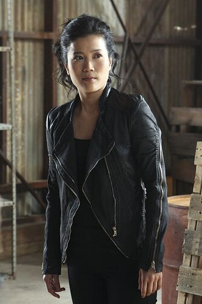
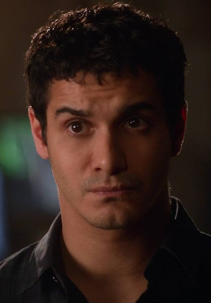
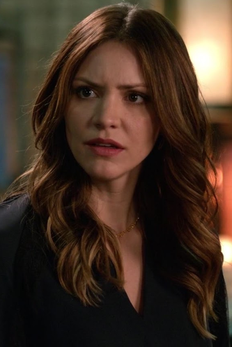

Sylvester Dodd
Sylvester Dodd, prezývaný Sly, je členom tímu Škorpion. Je matematickým zázrakom a veľmajstrom šachu, hoci trpí závažným ochorením OCD. Je tiež svetovým ornitológom a od konca tretej sezóny je radový radca. V sezóne štyri sa Sly stáva obhajcom, aby bol Cabe zbavený podnecovania úteku Marka Collinsa. Stvárnil ho Ari Stidham.
Happy Quinn-Curtis
Happy Quinn-Curtis (nar. 1988) je manželkou Tobyho Quinna-Curtisa a členkou tímu Škorpion. Je zázrakom strojárstva a mechaniky. Stvárnil ju Jadyn Wong.
Toby Quinn-Curtis

Dr. Tobias "Toby" Merriweather Quinn-Curtis (nar. 1982) je manžel Happy Quinn-Curtis a člen tímu Škorpion. Je to behaviorista a liečivý zázrak. Má IQ 170 a je najnižší v tíme. Stvárnil ho Eddie Kaye Thomas.
Walter O'Brien
Walter Patrick O'Brien (nar. 1983) je zakladajúcim členom a vedúcim tímu Škorpion. Má IQ 197 a má fotografickú pamäť. Stvárnil ho Elyes Gabel.
Paige Dineen
Paige Dineen (narodená 13. apríla 1986) je slobodná matka Ralpha Dineena. Je sociálnou pracovníčkou tímu Škorpion. Stvárnila ju Katharine McPhee.
Agent Cabe Gallo

Agent Cabe Gallo je špeciálnym agentom amerického ministerstva pre vnútornú bezpečnosť a vládnym pracovníkom tímu Škorpion. Po jeho vylúčení v sezóne štyri bol Cabe dočasne stážistom Škorpiona. Je najstarším členom tímu Škorpion. Stvárnil ho Robert Patrick.
Tím Škorpión

Škorpión je americký akčný dramatický televízny seriál. Vysiela ho CBS od 22. septembra 2014. Na Slovensku ho začala vysielať TV Markíza od 14. júla 2015. Seriál je voľne založený na počítačovom expertovi Walterovi O'Brienovi. V seriáli si O'Brien so svojimi priateľmi navzájom pomáhajú riešiť komplexné globálne problémy a zachraňujú životy. 12. mája 2018 zrušila CBS seriál po štyroch sériach.